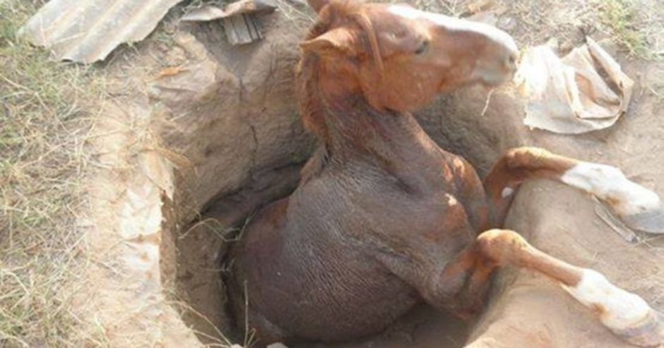

Um fazendeiro, que lutava com muitas dificuldades, possuía alguns cavalos para ajudar nos trabalhos em sua pequena fazenda. Um dia, o capataz veio trazer-lhe a notícia de que um dos cavalos havia caído num velho poço abandonado. O poço era muito profundo e seria extremamente difícil tirá-lo de lá.
O fazendeiro foi rapidamente até o local do acidente, avaliou a situação, certificando-se de que o animal não estava machucado. Mas, pela dificuldade e alto custo para retirá-lo do fundo do poço, achou que não valia a pena investir na operação de resgate.
Tomou, então, a difícil decisão: determinou ao capataz que sacrificasse o animal, jogando terra no poço até enterrá-lo, ali mesmo. E assim foi feito: os empregados, comandados pelo capataz, começaram a lançar terra para dentro do buraco de forma a cobrir o cavalo.
Mas, à medida que a terra caía em seu dorso, o animal a sacudia e ela ia se acumulando no fundo, possibilitando a ele ir subindo. Logo, os homens perceberam que o cavalo não se deixava enterrar, mas, ao contrário, estava subindo à medida que a terra enchia o poço, até que, finalmente, conseguiu sair!
